folk storyteller.
debut album Postcards out now.

folk storyteller.
debut album Postcards out now.
Bluejay Friese is also known as Ajay Friese and Ajay Parikh-Friese. He is a folk-country singer-songwriter, musician, and actor with appearances on Netflix productions including Lost in Space, Riverdale, American Classic with Kevin Kline and Laura Linney, The Order, and Dirk Gently's Holistic Detective Agency. Based between Prescott, Arizona and Victoria, British Columbia, he is an independent folk-country artist releasing new music and touring.